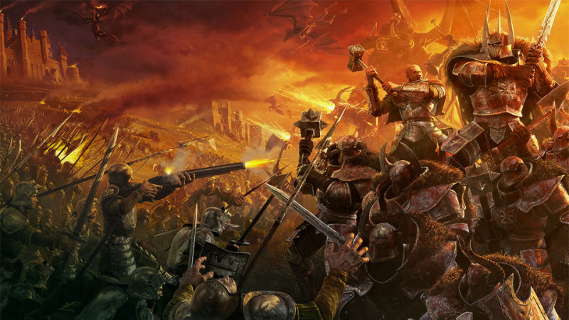
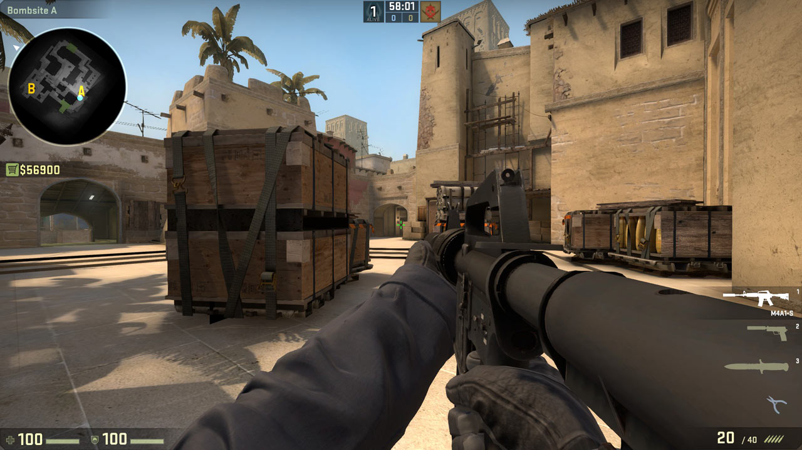
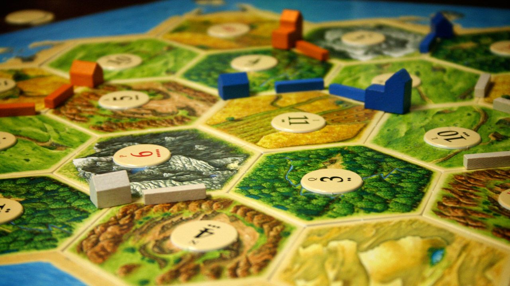

Massive Multiplayer Online Role Playing Games
MMORPG's can best be descibed as interactive Dungeons and Dragons games. At the core of every MMORPG is a large explorable world
for players to roam oftentimes accompanied by deep, integrated lore and backstories for the world the developers built. Upon creating
an avatar to represent themselves in the world, players choose a "class" for their avatar, with each class having different unique
abilities available to them to use.
There is never a set "goal" in MMORPG's, rather, the goal is to make connections with other players to accomplish feats within the virtual world. Developers program dungeons for players to explore together, which oftentimes contain boss monsters that require a group of players to take down. In order to get stronger, players will find magical armaments, weapons and armor, which when equipped help increase their avatars strengths and cover up their weakness's.
If going on an adventure with friends in a wide open world is something that sounds exciting to you, you might want to give MMORPG's a try.
Some MMORPG's:
World of Warcraft
Final Fantasy
Guild Wars 2
The Elder Scrolls Online
There is never a set "goal" in MMORPG's, rather, the goal is to make connections with other players to accomplish feats within the virtual world. Developers program dungeons for players to explore together, which oftentimes contain boss monsters that require a group of players to take down. In order to get stronger, players will find magical armaments, weapons and armor, which when equipped help increase their avatars strengths and cover up their weakness's.
If going on an adventure with friends in a wide open world is something that sounds exciting to you, you might want to give MMORPG's a try.
Some MMORPG's:
World of Warcraft
Final Fantasy
Guild Wars 2
The Elder Scrolls Online

Massive Multiplayer Online Battle Arena's
MOBA's are best likened to this centuries interactive tower defense games. Traditionally, MOBA's are played by two teams of five on a small map
that contains a base for each team with the objective being to destroy your opponents base. Each base has a set number of pathways leading
out of it with each pathway containing "towers" that the oposing team must destroy in order to get into your base. Each player selects a character
to play out of a pre-defined roster of characters, each one having different abilities. Each player will then work with his teammates to take down
the other team's characters, destroy their towers and eventually the base.
These games have become increasingly popular, due in no small part to the fact that they often have low system requirements and do not require all that much time to play. Each game lasts anywhere from 20 to 45 minutes on average, which is nice if you want to sit down after a long day to play with friends but don't have much time for a longer time sink. Another key advantage to playing MOBA's is that each time you start a new game, everyones characters start on the same level. This means that it doesn't matter if someone sinks more time into the game than you, as long as your raw skill is better than theirs you will come out on top.
If playing short, competitive games with friends is something that excites you, this genre is definetly something you should try out.
Some MOBA's:
League of Legends
Dota 2
Heros of the Storm
Smite
These games have become increasingly popular, due in no small part to the fact that they often have low system requirements and do not require all that much time to play. Each game lasts anywhere from 20 to 45 minutes on average, which is nice if you want to sit down after a long day to play with friends but don't have much time for a longer time sink. Another key advantage to playing MOBA's is that each time you start a new game, everyones characters start on the same level. This means that it doesn't matter if someone sinks more time into the game than you, as long as your raw skill is better than theirs you will come out on top.
If playing short, competitive games with friends is something that excites you, this genre is definetly something you should try out.
Some MOBA's:
League of Legends
Dota 2
Heros of the Storm
Smite

First Person Shooters
FPS's or first person shooters are fast paced, action packed games traditionally played on teams of five to ten players. There are different
game modes in every game, with capture the flag, deathmatch, king of the hill and bombing missions being some of the more popular ones. Players
join a team and use gun based combat to fight the opposing team, often augmenting their charcters each round with different weapons and explosives.
There is usually a playstyle for everyone with sniper's being available for the more tactical soldier, machine guns for the gutsy and traditional assault
rifles and sub machine guns for a more traditional touch.
First person shooters were more often than not always based on non fictional standards, but for those who enjoy a more fantasy setting games like Halo and Blizzard Entertainments new Overwatch might do the trick. These games retain all of the well known standards of the FPS environment but at the same time add in a splash of sci-fi. Overwatch made waves as one of the first first person shooters in the market to successfully implement a class system into their game; each player can choose a specific character to play as each round and each one of those characters has different unique abilities to use.
If you enjoy super fast, action packed mini rounds of gameplay with a strategic edge, you should give first person shooters a try.
Some first person shooters:
Halo
Call of Duty
Counter Strike
Overwatch
First person shooters were more often than not always based on non fictional standards, but for those who enjoy a more fantasy setting games like Halo and Blizzard Entertainments new Overwatch might do the trick. These games retain all of the well known standards of the FPS environment but at the same time add in a splash of sci-fi. Overwatch made waves as one of the first first person shooters in the market to successfully implement a class system into their game; each player can choose a specific character to play as each round and each one of those characters has different unique abilities to use.
If you enjoy super fast, action packed mini rounds of gameplay with a strategic edge, you should give first person shooters a try.
Some first person shooters:
Halo
Call of Duty
Counter Strike
Overwatch

Board Games
Board games are some of the earliest renditions of multiplayer games known to man kind. We all know what they are; most of us grew up playing games such
as monopoly or scrabble but of recent years the table top genre has expanded into even more complex and intricate designs. Board games are played with three
or more people with games often spanning over an hour in most cases. There are different types of board games from games where the objective is to beat all other
players in achieving a goal, to working together with others to complete a task.
There are even card games, such as magic the gathering, pokemon or yu-gi-oh for those that want a collectors spin on board games. In each of these games, players collect different cards that have a different role in how the game is played out. They construct decks of these cards, then play against an opponent who has constructed their own deck. Following common rules pertaining to whichever game they are both playing, players take turns back and forth until one of them meets the criteria for a win.
If you enjoy being face to face with friends spending time together, you should dead down to your local hobby shop and pick up some board games.
Some board games:
Risk
Monopoly
Settlers of Catan
Game of Life
Magic the Gathering
There are even card games, such as magic the gathering, pokemon or yu-gi-oh for those that want a collectors spin on board games. In each of these games, players collect different cards that have a different role in how the game is played out. They construct decks of these cards, then play against an opponent who has constructed their own deck. Following common rules pertaining to whichever game they are both playing, players take turns back and forth until one of them meets the criteria for a win.
If you enjoy being face to face with friends spending time together, you should dead down to your local hobby shop and pick up some board games.
Some board games:
Risk
Monopoly
Settlers of Catan
Game of Life
Magic the Gathering
Site Statistics
| Game | Number of users | Number of meetups | Forum posts |
|---|---|---|---|
| MMORPG | 0 | 0 | 0 |
| MOBA | 0 | 0 | 0 |
| FPS | 0 | 0 | 0 |
| Table Top | 0 | 0 | 0 |